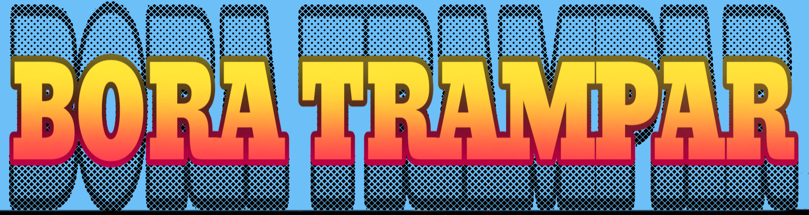
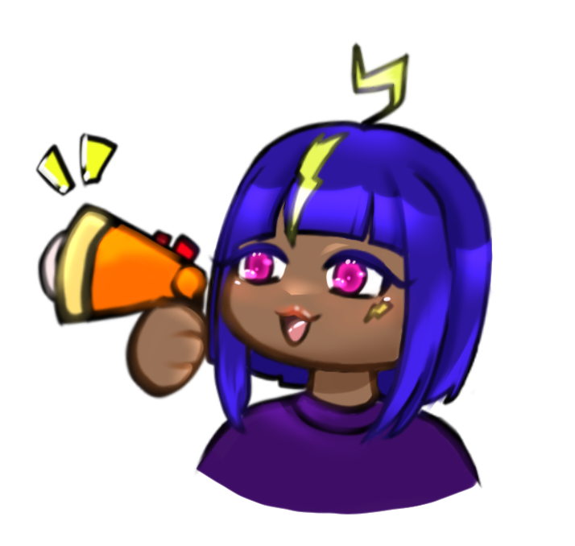
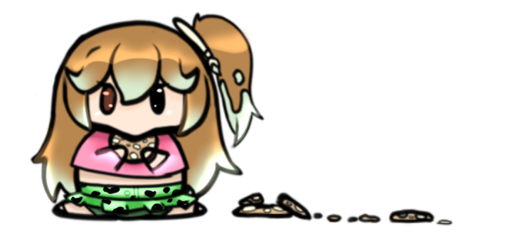

O Bora Trampar foi criado para ajudar jovens a ingressarem no mercado de trabalho de forma simples, acessível e prática. Aqui você encontra ferramentas para descobrir sua carreira, montar seu currículo e se preparar para entrevistas.

